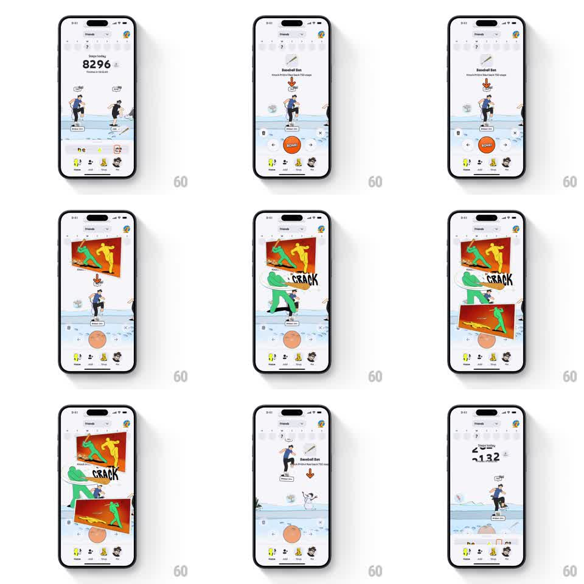

Media
Frame-by-frame

Rebuild this animation 1:1: Stompers' baseball-bat attack - tapping SWING triggers a comic-book beat: a CRACK panel bursts in, the bat connects, and the target character is knocked flying backward off the scene.

Rebuild this animation 1:1: Stompers' baseball-bat attack - tapping SWING triggers a comic-book beat: a CRACK panel bursts in, the bat connects, and the target character is knocked flying backward off the scene. ## Integration Integration: stack-agnostic spec - springs given as stiffness/damping, timed motions as duration + curve; map every value to your framework and animation library of choice. ## Scene Step-battle game screen: step count and progress ring up top, an illustrated stage with the player's character and a rival, item slots, and an orange SWING button when the Baseball Bat power-up is selected. ## Motion spec Pattern: comic action strike, ~1.2s. - On tap, the player character lunges into a swing (~250ms, anticipation squat then fast rotation, ease-in). - At contact, a comic panel slams in over the stage (scale 1.4 to 1, spring stiffness 380 damping 16) with a jagged "CRACK" burst and speed lines; the whole screen takes a 6px shake (~200ms). - The rival is launched: flies back and up along an arc (450ms, ease-out), tumbling (~540deg), shrinking slightly, landing off the panel edge as a second comic panel of the flight slides in from below. - Panels retract (slide off in stack order, 250ms), the scene resets, and the step total counts up. ## Calibration - The shake starts exactly on contact, one frame of stillness before it sells the impact. - Panels are flat and saturated (orange/red, halftone texture); no soft gradients. ## Reduced motion Panels fade in, the rival slides off without tumbling, no screen shake. ## Don't miss - The rival's tumble keeps rotating through the whole flight - a stiff flying body reads as a bug. - The SWING button disables during the sequence and re-enables on reset.